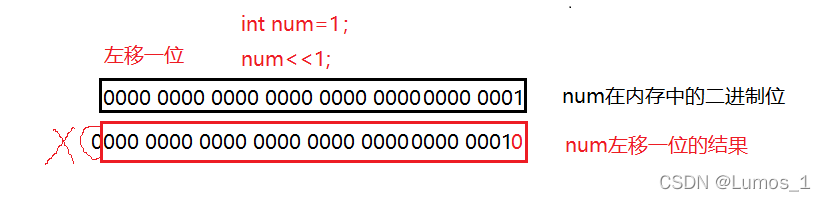
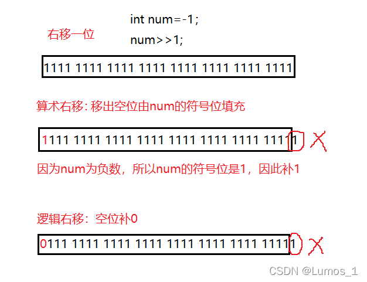
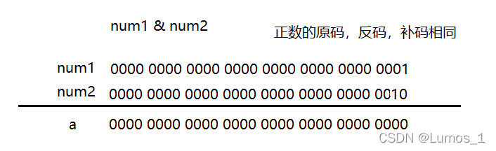
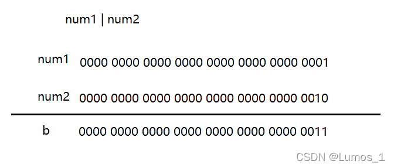
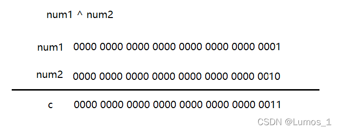
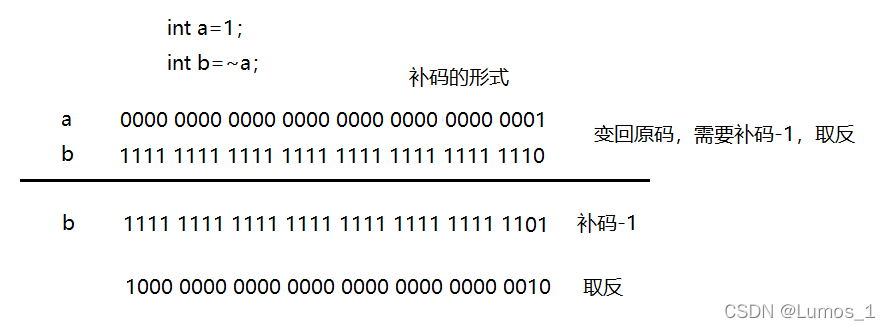

目录
C语言的操作符分为以下10种：
| 算术操作符 | 移位操作符 |
| 位操作符 | 赋值操作符 |
| 单目操作符 | 关系操作符 |
| 逻辑操作符 | 条件操作符 |
| 逗号表达式 | 下标引用、函数调用和结构成员 |
一、算术操作符
| + | - | * | / | % |
1.+ - * / 操作符可以作用于整数和浮点数；
2.%操作符只能用于两个整数之间，返回的是整除之后的余数；
3./ 操作符则是根据两操作数类型进行除法，如两个操作数是整型，执行整数除法，如果两数为浮
点型，则执行浮点数除法。
二、移位操作符
| << 左移操作符 | >> 右移操作符 |
1.左移操作符
移位规则： 左边抛弃、右边补0

2.右移操作符
右移运算分两种：
（1）逻辑移位 ：左边用0填充，右边丢弃
（2）算术移位 ：左边用原该值的符号位填充，右边丢弃

注意！注意！⚠ 不能移动负数位！
三、位操作符
| & | | | ^ |
&：按位与（有0为0）
| ：按位或（有1为1）
^：按位异或（相同为0，不同为1）
（位运算是通过补码进行计算的）
- #include <stdio.h>
- int main()
- {
- int num1 = 1;
- int num2 = 2;
- int a,b,c;
- a = num1 & num2;
- b = num1 | num2;
- c = num1 ^ num2;
- return 0;
- }


四、赋值操作符
可将未定义变量进行赋值，也可以将之前的改掉。
- int x = 0;
- x = 10;
复合赋值符
| += | *= | %= | <<= | |= |
| -= | /= | >>= | &= | ^= |
- int x = 10;
- x = x+10;
- x += 10;
五、单目操作符
| ! | 逻辑反操作 |
| - | 负值 |
| + | 正值 |
| & | 取地址 |
| sizeof | 操作数的类型长度（以字节为单位） |
| ~ | 对一个数的二进制按位取反 |
| -- | 前置、后置-- |
| ++ | 前置、后置++ |
| * | 间接访问操作符(解引用操作符) |
| (类型) | 强制类型转换 |
！（逻辑反操作）：
- int a = 0;
- while(!a)
- {
- //语句
- }
- //!a为真，while进入死循环
&（取地址）：
- int p=1;
- int *a=NULL;
- a=&p;
sizeof （操作数的类型长度（以字节为单位））：
- int a = 10;
- printf("%d\n", sizeof(a));//长度为4字节
- printf("%d\n", sizeof(int));//长度为4字节
- printf("%d\n", sizeof a);//长度为4字节
- printf("%d\n", sizeof int);//写法错误，求类型长度不能将括号去掉
~（对一个数的二进制按位取反）：

前置++和 --
- #include <stdio.h>
- int main()
- {
- int a = 10;
- int x = ++a;
- //先对a进行自增，然后对使用a，也就是表达式的值是a自增之后的值。x为11。
- int y = --a;
- //先对a进行自减，然后对使用a，也就是表达式的值是a自减之后的值。y为10;
- return 0;
- }
后置++和 --
- #include <stdio.h>
- int main()
- {
- int a = 10;
- int x = a++;
- //先对a先使用，再增加，这样x的值是10；之后a变成11；
- int y = a--;
- //先对a先使用，再自减，这样y的值是11；之后a变成10；
- return 0;
- }
六、关系操作符
| > | >= | != |
| < | <= | == |
判断两数是否相等是==，=是赋值操作符，注意不要用错
要注意的是==与=之间的区别，不要混淆
七、逻辑操作符
| && | 逻辑与 |
| || | 逻辑或 |
&&：只要句中有一个表达式为假，这一个之后的表达式将不再执行
||：只要句中有一个表达式为真，这一个之后的表达式将不再执行
要区分逻辑与&&和按位与&之间的区别逻辑或||和按位或|之间的区别
- 1 & 2 = 0;
- 1 && 2 = 1;
-
-
- 1 | 2 = 3;
- 1 || 2 = 1;
八、条件操作符
exp1 ? exp2 : exp3
exp1是判断条件，为真执行exp2，为假执行exp3
九、逗号表达式
exp1, exp2, exp3, …expN
逗号表达式，就是用逗号隔开的多个表达式。
逗号表达式，从左向右依次执行。整个表达式的结果是最后一个表达式的结果。
- int a = 1;
- int b = 2;
- int c = (a>b, a=b+10, a, b=a+1);
- //a=12 b=12+1=13
十、下标引用、函数调用和结构成员
1.[ ] 下标引用操作符
操作数：一个数组名 + 一个索引值
- int arr[10];//创建数组
- arr[6] = 1;//实用下标引用操作符。
- //[ ]的两个操作数是arr和6。
2.( ) 函数调用操作符
接受一个或者多个操作数：第一个操作数是函数名，剩余的操作数就是传递给函数的参数。
- void test()
- {
- printf("Lumos\n");
- }
-
- int main()
- {
- test(); //实用（）作为函数调用操作符。
- return 0;
- }
3.访问一个结构的成员
. 结构体.成员名
-> 结构体指针->成员名
- #include <stdio.h>
- struct Stu
- {
- char name[10];
- int age;
- char sex[5];
- };
-
- int main()
- {
- struct Stu s = {"zhansan", 20, '男'};
- struct Stu* p = &s;
-
- printf("%s %d %c\n",s.name,s.age,s.sex);
- printf("%s %d %c\n",p->name,p->age,p->sex);
- //以上两句所表达的含义均是结构成员访问
- return 0;
- }


![]()
 1107
1107


 被折叠的 条评论
为什么被折叠?
被折叠的 条评论
为什么被折叠?
 到【灌水乐园】发言
到【灌水乐园】发言